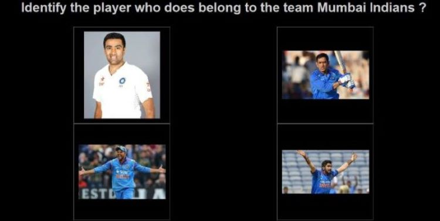
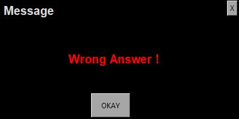

Questionary
- Python version: 3.6.8
- Dlib version: 19.8.1
-
This project has two parts:-
- creating a database
- creating question with appropriate options, and a single correct answer
- populating the question, options into GUI, and providing messages on selection of an option.
- Part 1
- A list of player with details is required, with name of the players under the column 'Player'.
- The file format must be in .csv
- (Note: Downloading is done using bing_image_download.py)
- Using the list of names from the column 'Player'. Images of the players are downloaded.(Note: one can set the 'Usage Rights' for the images to be downloaded.)
-
There are two image repository that is created:
- with only the faces of players, which is pickled
- with players(not specified for face images)
- All the images in the second repository are screened for the presence of a single player and then screened to recognise the faces using the respective pickle file.
- Part 2
- Questions are generated using question.csv(.csv file format is mandatory). The question.csv has mandatory columns: question, tag, not_flag. Using the combination, questions are generated.
- Using tag , appropriate columns are populated, and corresponding image for each option is selected.(Note: Only one option is a correct answer.)
- Part 3
- Using tkinter, quesion and the corresponding options are populated on the screen. On selection of an option, a pop-up box with message appears.
- Using 2019 Ipl data, for sample:-
- Questionary Screen with questions and options
-
 - Message box on Selecting Wrong Option
-
 - Link to Github: Questionary